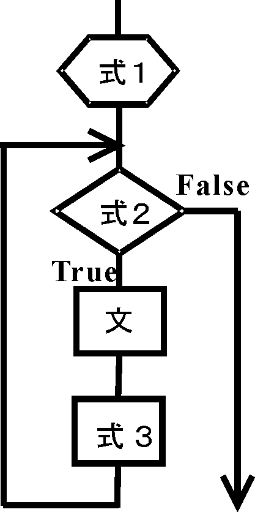

| プログラミングおよび演習 ＮＯ．5 |
| for文 |
|  |
for文は、(式1; 式2; 式3)の条件に応じて、{…}の中の実行文を繰り返し実行します。ここで、(式1; 式2; 式3)の条件式は、フローチャートに示すように
| [注]：i++はインクリメント演算子で、i=i+1をあらわします（i+=1と書くことも出来ます）。 同様に、i--はデクリメント演算子で、i=i-1を表します。iを２つづつ増やす場合は、i+=2(または、i=i+2)のように書きます。 ++i, --iのように変数の前に、演算子を付ける書き方もあります。各々は ++ｉ ： i=i+1の計算を行った後にiを使う ｉ++ ： iを使ったあとにi=i+1の計算を行なう。 の違いがあります。for文の中で使った場合は、どちらを使っても構いません。 |
例 5-1 #include<stdio.h>
int main(void)
{
int sum,i,n;
printf("Input a positive number ?\n");
fflush(0);
scanf("%d",&n);
sum=0;
for(i=1;i<=n;i++)
sum=sum+i;
printf("\nsum=%d\n",sum);
return(0);
}
|
| 演習問題 5-1 (Revised : 2016/06/02) for文を使って以下の数列の和を計算するプログラムを作成してください。 n Sn = 1k+2k+3k+4k+5k+...+nk = Σ ik i=1 ただし、nとkの値はキーボードから入力するようにする。nとして、正の数を入力した場合は計算を実行し、負の数を入力した場合は入力のやり直しを促す文章を出力した上で、何もせずにプログラムを終了させる。 実験では、kの値はk=1,2,3の3通り、nの値はkの値ごとに2通り以上について試すこととし、一つは10000以上のnを入力してください。考察では、真値 （以下の公式を用いた手計算の結果）と比較して誤差がある場合にはその理由について考察し、さらにプログラムの動作について説明してください。 [補足] 手計算用の公式（注：プログラムには以下の公式を用いないこと） k=1 Sn=n(n+1)/2 k=2 Sn= n(n+1)(2n+1)/6 k=3 Sn=n2(n+1)2/4 |
| 演習問題 ５-２ (Revised : 2013/06/07) ①上記２つのプログラムの動作を確認してください。また、最初のプログラムでは正しく計算されない理由をその根拠と共に示してください。 ヒント： for文の中に xおよびs の値を表示するためのprintf文を挿入して、繰り返すたびにこれらの値がどのように変化するか確認する。その上で、for文の繰り返し計算が、実際の計算で何回行われているか？繰り返しの終了判定が正しく行われているか？、などを調べてみよ。 ②関連した問題として、int型のループ変数をfor文に用いて、double型の数0.1を1,000,000,000 回足す計算を行ってください。その一方で、1.0を 100,000,000 回足した結果はどうなりますか？結果を示した後で前者の計算誤差が大きくなる理由について説明してください。 ヒント：printf文の書式指定に%lf（あるいは%23.16le) などを用いて、16桁程度の桁数で表示する。少ない桁数で表示すると両者が同じ数であるかのように表示されることに注意する。 ③余力のある人へ：double型の変数xをループ変数に使った上記①の最初のプログラムを、以下のヒントを参考に、正しい計算結果を出力するプログラムに作り変えてください。 ヒント： 倍精度実数xの比較演算は、丸め誤差を考慮して以下のようにする必要がある。 if( x == a ) の代わりに、if( fabs(x-a) < fabs(a)*1.0e-15 ) if( x <= a ) の代わりに、if( x <= a+fabs(a)*1.0e-15 ) if( x >= a ) の代わりに、if( x >= a-fabs(a)*1.0e-15 ) |
[注意] 各々のループの始まりと終わりを分かりやすくするために、上記リストのように、ループが深くなる度ごとに、字下げ（インデント、indentation）を行います。for文にかぎらず、始まりの｛と終わりの｝の間は、必ず先頭に4文字程度の空白（またはTAB）をいれる（字下げする）習慣を身につけてください。
多重ループの使用例として、例えば、
int i,j,n;
double x;
n=10;
for(i=0; i<n; i++){
for(j=0; j<n; j++){
x= i*n+j;
printf("%4.0lf",x);
}
printf("\n");
}
のプログラムを実行すると結果はどうなりますか？。
| 演習問題 ５-３ (Revised : 2015/06/11) 出力が下記のようになるようにプログラムを作り変えてください。for文のループが深くなる度に、適正な字下げを施した、プログラムにしてください。また、プログラムの動作と出力結果を関連づけて説明して下さい。 31 32 33 34 35 36 37 38 39 40 41 42 43 44 45 46 47 48 49 50 51 52 53 54 55 56 57 58 59 60 61 62 63 64 65 66 67 68 69 70 71 72 73 74 75 76 77 78 79 80 81 82 83 84 85 86 87 88 89 90 91 92 93 94 95 96 97 98 99 100 101 102 103 104 105 106 107 108 109 110 111 112 113 114 115 116 117 118 119 120 121 122 123 124 125 126 127 128 129 130発展問題： 出力が下記のようになるようにプログラムを作り変えてください。 ただし、３重ループにしてください。 0 -1 -2 -3 -4 -5 -6 -7 -8 -9 -10 -11 -12 -13 -14 -15 -16 -17 -18 -19 -20 -21 -22 -23 -24 -25 -26 -27 -28 -29 -30 -31 -32 -33 -34 -35 -36 -37 -38 -39 -40 -41 -42 -43 -44 -45 -46 -47 -48 -49 -50 -51 -52 -53 -54 -55 -56 -57 -58 -59 -60 -61 -62 -63 -64 -65 -66 -67 -68 -69 -70 -71 -72 -73 -74 -75 -76 -77 -78 -79 -80 -81 -82 -83 -84 -85 -86 -87 -88 -89 -90 -91 -92 -93 -94 -95 -96 -97 -98 -99 -100 -101 -102 -103 -104 -105 -106 -107 -108 -109 -110 -111 -112 -113 -114 -115 -116 -117 -118 -119 -120 -121 -122 -123 -124 -125 -126 -127 -128 -129 -130 -131 -132 -133 -134 -135 -136 -137 -138 -139 -140 -141 -142 -143 -144 -145 -146 -147 -148 -149 -150 -151 -152 -153 -154 -155 -156 -157 -158 -159 -160 -161 -162 -163 -164 -165 -166 -167 -168 -169 -170 -171 -172 -173 -174 -175 -176 -177 -178 -179 -180 -181 -182 -183 -184 -185 -186 -187 -188 -189 -190 -191 -192 -193 -194 -195 -196 -197 -198 -199 -200 -201 -202 -203 -204 -205 -206 -207 -208 -209 -210 -211 -212 -213 -214 -215 -216 -217 -218 -219 -220 -221 -222 -223 -224 -225 -226 -227 -228 -229 -230 -231 -232 -233 -234 -235 -236 -237 -238 -239 -240 -241 -242 -243 -244 -245 -246 -247 -248 -249 -250 -251 -252 -253 -254 -255 -256 -257 -258 -259 -260 -261 -262 -263 -264 -265 -266 -267 -268 -269 -270 -271 -272 -273 -274 -275 -276 -277 -278 -279 -280 -281 -282 -283 -284 -285 -286 -287 -288 -289 -290 -291 -292 -293 -294 -295 -296 -297 -298 -299 |
| 演習問題5-4 指数関数 次式のテーラー展開式に従って、指数関数ｅxを計算するプログラムをつくってみてください。 ｅx= １＋ｘ＋ｘ2/2!＋ｘ3/3!＋… （ヒント：何をforループのループ変数にすれば良いですか？） また、x=1の場合について、nの値が1から20までのそれぞれの計算結果と真値e=2.718281828459045...とを比較して下さい。 発展問題： ｘ=-5.5の場合について、真値ｅ-5.5＝0.00408677…と結果を比較してみてください。この場合は、 １ １ ｅx＝ ｅ-x １＋(-x)＋(-x)2/2!＋(-x)3/3!＋… の計算式を使ったほうが計算誤差が小さくできます。最初の計算式で誤差が大きくなるのは何故ですか？。 |